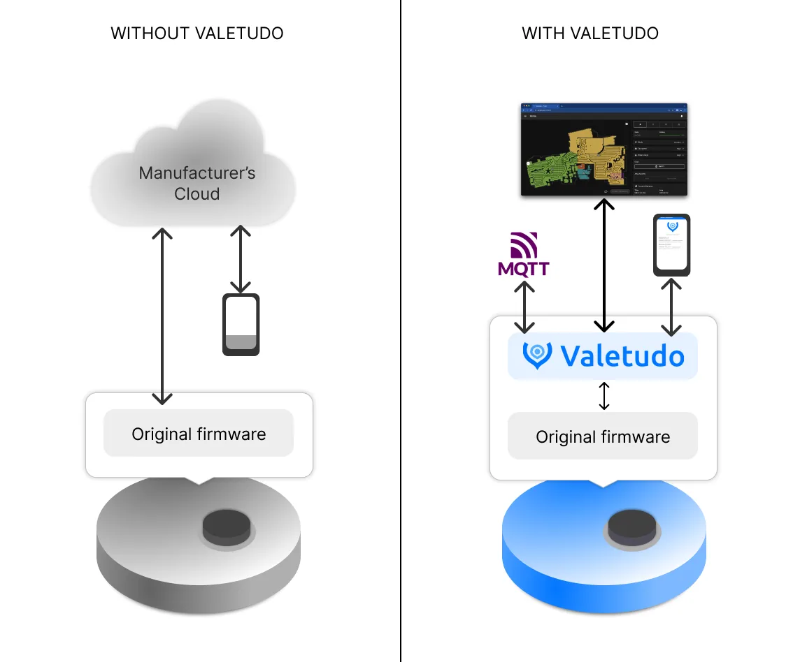

← 返回全部路线Valetudo 官方工作原理图，展示云端依赖与本地控制路径。图片未单独声明授权。 查看图片来源 ↗
Valetudo
- 让兼容扫地机器人保留本地控制并降低厂商云依赖。
- 3/5 个维度有可核验来源
- 使用已读来源支持的难度、文档/社区与实用价值维度；未核价的成本及未完整评估的刷坏/安全风险保留为 null。

它能变成什么
- 离线控制
- 设备范围 Valetudo 支持列表中的具体扫地机器人型号
- 设备类别 机器人
- AI 关系 传统复活基础设施
- 路线类型 具体改造路线
- 资料最近核对 2026-10-20
动手前
- 改造方法 云服务替代
- 上手难度 高难度
- 拆机 依具体型号
- 焊接 依具体型号
- 云 API / 服务 不需要
- 停止条件 不支持所有机器人；root 方法和恢复难度随型号变化。
- 固件 待核实
- 地区版本 待核实
- 二手价范围 缺少可靠来源
- 改造成本 缺少可靠来源
- 可能成本 按型号的刷写/连接工具
风险与恢复
- 数据丢失风险 可能发生
- 刷坏 / 无法启动风险 依操作路径
- 恢复路线 必须按对应机器人的 rooting 方法备份；本次未验证任何型号的救砖。
- 恢复资料 ↗（无已核验链接）
实际选择依据
- 原来卡在哪里 部分扫地机器人依赖厂商云控制，而机械与传感器仍可工作。
- 改完能做什么 在受支持且能取得相应权限的设备上，用本地服务接替云端接口。
- 判断依据 Valetudo 明确不是通用替换固件。支持列表是穷尽清单，不在列表上就不应推测可用。同名 Xiaomi 1C 也存在不同硬件修订，文档只支持指定内部型号；Xiaomi V1 的生产时间还会改变是否需要拆机。原厂地图或硬件能力缺失不会因为去云就自动补齐。
- 适合你，如果 精确型号在支持列表中、愿意按机型准备工具和恢复方法的人。
- 先别选，如果 型号不在列表上，或希望借此修复电池、电机等物理故障的人。
完成后检查
- 核对内部型号、生产批次与对应 root 文档
- 断开互联网后测试清扫和本地控制
- 检查地图、充电回座、配置持久化和恢复条件
证据、维护与来源
- E1 · 源码与部署文档 README 明确是运行在厂商固件上的本地云替代层，官方提供支持机器人列表和逐机型安装方法。
- 实机状态 KitAgain 未对此设备进行实机测试。
- 维护状态 仓库未归档
- GitHub 最后 push 2026-10-18T17:15:02Z
- 仓库许可证 Apache-2.0
- 近期 push 不证明型号可用；根许可证也不自动覆盖固件、模型、品牌或第三方组件。
- 上游项目文档 ↗2026-10-20先用它了解项目能做什么、怎样开始，以及作者写明的限制。https://github.com/Hypfer/Valetudo/blob/master/README.md
- 官方适配或安装文档 ↗2026-10-20动手前用它核对准确型号、固件版本和安装步骤。https://valetudo.cloud/pages/general/supported-robots/
项目账号与已核实作者主页
- Hypfer · GitHub ↗ — 源码仓库所有者账号；不据此推断其为唯一作者